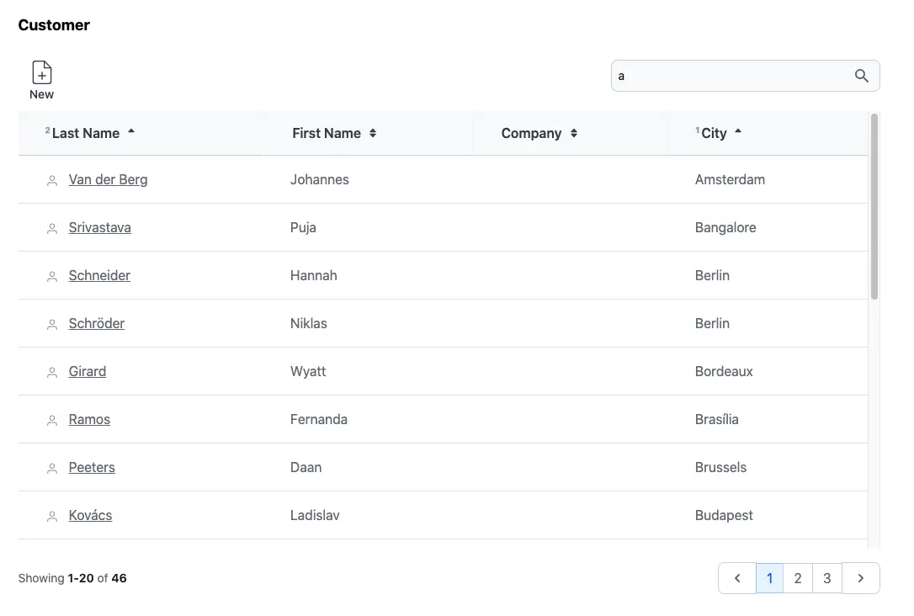

FFTable Flagship
FFTable is the best feature of Fuwafuwa Framework. This feature allows you to quickly build nice, responsive table view of selected fields in a table. It provides multiple fields sorting, searching, formatting, pagination, add/modify record. Let's review Customer view in Chinook sample aplication.

<?php
// MODEL: app/controllers/user/model/chinook/customer.php
namespace Model\Chinook;
class Customer extends \Fuwafuwa\BaseModel {
function __construct(\Data\Chinook $db) {
parent::__construct($db, 'Customer', ['ai_field' => 'CustomerId',]);
$this->validation = [
'rules' => [
'FirstName' => 'required',
'LastName' => 'required',
'Address' => 'required',
'Email' => 'required|email',
]
];
}
}
<?php
// CONTROLLER: app/controllers/user/ajax/chinook/employee.php
namespace Ajax\Chinook;
class Employee extends \Fuwafuwa\Controller\FFTable {
function list($f3) {
$this->record_list('\Model\Chinook\Employee');
}
function edit($f3) {
$this->ajaxEdit('\Model\Chinook\Employee');
}
function elist($f3) {
$sql = "SELECT e.*, h.FirstName as HeadFirstName, h.LastName as HeadLastName
FROM Employee e
LEFT JOIN Employee h ON e.ReportsTo = h.EmployeeId ";
$csql = "SELECT COUNT(1) FROM Employee e";
$this->record_elist($sql, $csql);
}
}
For simple table without lookup from other table, the controller code become very simple, only
edit and list method is required. The complexity of pagination, searching,
sorting are
handled by FFTable.
<f3:inject id="content">
<h2 class="text-lg font-bold">Customer</h2>
<div x-data="data">
<include href="blocks/table.html" />
<include href="blocks/modal-form.html" />
</div>
</f3:inject>
<f3:inject id="script">
<script src="{{@BASE}}/js-src/fftable.js"></script>
<script type="text/javascript">
let settings = {
fields: [
{
title: 'Customer Id', name: 'CustomerId', visible: false, readonly: true
},
{
title: 'Support Rep', name: 'SupportRepId', visible: false, type: 'select', triggerChange(d) {
fetchData('{{@BASE}}/ajax/chinook/employee/select-option',).then(data => {
this.options = data;
});
},
},
{
title: 'Last Name', name: 'LastName', formatter(v, c, d) {
return `<svg viewBox="0 0 24 24" class="inline mr-2 stroke-1 size-4 stroke-gray-500 dark:stroke-gray-400 fill-transparent">
<use href="#people" />
</svg> <a class="underline" href="{{@BASE}}/chinook/customer/${d.CustomerId}">${v}</a>`;
}, raw: true, class: 'whitespace-nowrap', searchable: true
},
{ title: 'First Name', name: 'FirstName', searchable: true },
{ title: 'Company', name: 'Company', class: 'whitespace-nowrap' },
{ title: 'Address', name: 'Address', visible: false, type: 'textarea', fclass: 'md:col-span-2' },
{ title: 'City', name: 'City', class: 'whitespace-nowrap' },
{ title: 'State', name: 'State', visible: false, },
{ title: 'Country', name: 'Country', visible: false, },
{ title: 'PostalCode', name: 'PostalCode', visible: false, },
{ title: 'Phone', name: 'Phone', visible: false, type: 'tel' },
{ title: 'Fax', name: 'Fax', visible: false, type: 'tel' },
{ title: 'Email', name: 'Email', visible: false, type: 'email' },
],
// table options
table: {
url: '{{@BASE}}/ajax/chinook/customer/list',
editable: true,
selection: 'single',
pageSize: 20,
sorting: 'multiple'
size: 'large',
// display: 'compact',
},
// form options
form: {
url: '{{@BASE}}/ajax/chinook/customer/edit',
object: 'Customer',
size: 'normal', // small, normal, large, huge
columns: 2,
size: 'large',
pk: ['CustomerId'], // primary key
}
}
let data = FFTable(settings);
</script>
</f3:inject>
<include href="blocks/popup.html" />
in the content section, we simply include table and modal-form blocks. The detail is in the script
section, where
the
table configuration is defined. Table configuration consists of fields, table
and
form property. Available properties for each are below:
Fields
Fields define columns that we want to show in table and form.
titlenamevisiblevirtualreadonlyhiddensortableinlinetypedefaultattr{ 'x-on:keyup.debounce': 'check_input()', 'maxlength': 100 }
validatorformatterfunction(value, column, data) to format current value. Example:
function(v) { return '$' + v }encoderfunction(value, column, data) to format data before saving into database:
function(v) { return JSON.stringify(v) }decoderfunction(value, column, data) to parse data from database
function(v) { return JSON.parse(v) }rawinitOptionsfunction(data) to be executed in form show event. Usually for initialization of select
options.
triggerChangefunction(data) to be executed when there is a change on watched properties.
Example:
{ title: 'Support Rep', name: 'SupportRepId', visible: false, type: 'select', triggerChange(d) {
fetchData('{{@BASE}}/ajax/chinook/employee/select-option',).then(data => {
this.options = data;
});
},
},
d contains current data. In code above, after executing fetchData, it will set
options
property of this (current field).
watchsearchableclassfclassqueryPrefix
SELECT a.timestamp, u.name FROM activity a JOIN user u on
a.userid = u.userid
, then you specify a or u for the queryPrefix, depends on which table you intend to query.
lookupUrllookupLabelIdUser and Username pair
to represent user in join query, then lookupLabel is assigned with Username.staticLookupfilter{ op: 'LIKE', } Add filter above table. Op is query operator. If op is
BETWEEN, second input filter will be shown.Valid op: LIKE, CONTAINS, START(S), END(S), IS (NOT) NULL, IN, < <= > >= = <> !=
For IN filter, value will be split on pipe character. Example:
{ op: 'IN', value: 'Black|Green|Red' } will result query
field IN ('Black', 'Green',
'Red')
.For < <= > >= filter, if value2 is specified, opposite sign complement will be added. Example:
{ op: '>', value: 10, value2: 20 } will result query
(field > 10 AND field <
20)
Table
table section define table display parameter.
urladdableeditabledeletableprintableexportablesearchableselectionsortingpageSizedisplaydisplayClassrowClassrowClass(idx, row)cellClasscellClass(ridx, cidx, row, col)sizedeferLoadingcustomHeader
[
[
{ title: 'City', attr: { rowspan: 2 }, class: 'border-r border-t' },
{ title: 'Clothes', attr: { colspan: 3 }, class: 'border-r border-t' },
{ title: 'Accessories', attr: { colspan: 2 }, class: 'border-t' }
],
[
{ title: 'Trousers', class: 'border-r' },
{ title: 'Skirts', class: 'border-r' },
{ title: 'Dresses', class: 'border-r' },
{ title: 'Bracelets', class: 'border-r' },
{ title: 'Rings' },
]
],
footerData
[
[
{ value: 'Total' },
{ name: 'sum-trousers', value: 10, class: 'text-right' },
{ name: 'sum-skirts', value: 10, class(v) { return { 'text-right': true, 'italic': v < 1000 } }, formatter(v) { return v + 5 } },
{ name: 'sum-dresses', value: 10, class: 'text-right' },
{ name: 'sum-bracelets', value: 10, class: 'text-right' },
{ name: 'sum-rings', value: 10, class: 'text-right' },
],
[
{ value: '%' },
{ name: 'total-trousers', value: 10, class: 'text-right' },
{ name: 'total-skirts', value: 10, class: 'text-right', formatter(v) { return v + 5 } },
{ name: 'total-dresses', value: 10, class: 'text-right' },
{ name: 'total-bracelets', value: 10, class: 'text-right' },
{ name: 'total-rings', value: 10, class: 'text-right' },
],
],
functionsfunctions: {
add() { location.href = '{{@BASE}}/page/edit'; return true },
edit(data) { location.href = '{{@BASE}}/page/edit?id=' + data.id; return true; },
}
Each function needs to return true.
eventHandlerfunction(event, data)filterfilter: {
cols: 1,
width: 'xl:w-2/3',
}
Toolbartoolbar: [
{
title: 'Filter',
show(selected, data) { return selected },
action(data) { submit(data) },
icon: '<svg></svg>'
}
]
tableInit()Form
form section define form display parameter.
urlobjectsizecolumnspkfullHeightformInit()preSubmitfunction(data, oper) before submit, modify and return the data backonSubmittedfunction(data, oper) after submission, modify data before displayonShowfunction(data) modify data before showing form and return the data backonSubmittedfunction(data) modify data after received response from server after submission, and
return itBackend
Ajax backend for table is very simple. You only need to implement list and
edit. Example:
<?php
namespace Ajax;
class User extends \Fuwafuwa\Controller\FFTable {
function list(\Base $f3): void {
$this->record_list('\Model\User');
}
function edit(\Base $f3): void {
$this->ajaxEdit('\Model\User');
}
function elist($f3) {
$sql = "SELECT al.*, ar.Name as ArtistName FROM Album al
JOIN Artist ar ON al.ArtistId = ar.ArtistId";
$csql = "SELECT COUNT(1) FROM Album al";
$this->record_elist($sql, $csql);
}
}
For list that involves complex query join, we can use elist method. In this method, we pass two
query, one for listing, and the other for counting.
Generators
Generators also available for FFTable to get basic form of the MVC files and modify later. Run this command in CLI:
php index.php data/generator/model --table=Customer > app/controllers/user/model/customer.php
php index.php data/generator/fftable --table=Customer > app/views/user/customers.html
php index.php data/generator/ajax-fftable --table=Customer > app/controllers/user/ajax/table/customer.php
See demo here